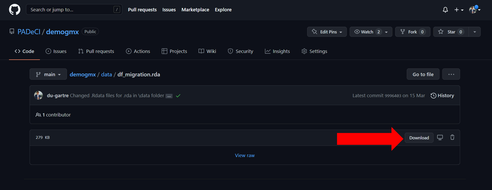

VERSIÓN EN ESPAÑOL: Datos demográficos de México
Sobre este repositorio 📖
PADeCI es un equipo de investigación interdisciplinario ubicado en el CIDE Región Centro en Aguascalientes, México. Con el contenido de este repostiorio se construyen diversas bases de datos de información demográfica de México, necesaria para los diferentes proyectos de PADeCI. Las series de tiempo poblacionales se construyen a partir de la información pública del Consejo Nacional de Población (CONAPO). Gracias a las proyecciones realizadas por el CONAPO, este repositorio cuenta con información sobre el tamaño de la población mexicana desde 1970, hasta el año 2051. Además de la población en un año específico, se incluyen proyecciones para el número de nacimientos, número de muertes, migración interestatal e internacional así como la tasa de envejecimiento. Hay bases para diferentes necesidades: desagregadas por año, por entidad federativa, por sexo y por edad. Las personas interesadas pueden utilizar los datos ofrecidos en este repositorio para cualquiera de sus proyectos profesionales o personales. Además de ser una herramienta de investigación, el respositorio también abre la oportunidad a que cualquier persona replique el proceso de limpieza y generación de datos hecho por PADeCI, siguiendo así los principios científicos de transparencia y replicabilidad.
Requisitos 💻
R version 4.1.2 (esta es la versión recomendada para evitar errores en el código, también conocidos como bugs).
Uso 📥
Cualquier persona puede replicar el trabajo de PADeCI, ya sea clonando este repositorio en su computadora o descargando archivos específicos. Los datos también se pueden utilizar sin necesidad de descargar, ni clonar el respositorio: basta con utilizar el URL que GitHub provee de la base de datos específica que se desea utilizar en formato raw, a continuación se presenta un ejemplo de cómo acceder a los datos usando este método.
Ejemplo de uso de los datos (extracción directa con url de GitHub desde R)
1. Seleccionar la base de interés
El repositorio incluye numerosas bases de datos sobre nacimientos, población, migración y fallecimientos. En este caso utilizaremos la base de migración desagreada por entidad federativa.
2. Importar base de datos directamente desde Github
En Github está la opción para descargar directamente la base de datos. Es importante notar que todas las bases que están en el paquete tienen el formato .rda que es particular de R.

3. Cargar base de datos
Una vez descargada, la base de datos puede cargarse en el ambiente de R con el siguiente comando.
df_nueva <- load(file = ".../df_migration.rda")Tómese en cuenta que los tres puntos antes de la diagonal son para indicar la ubicación del archivo en el directorio, ya sea de la computadora o sea dentro de algún proyecto de R.
4. Explorar datos
Para una exploración rápida de la base se puede utilizar el comando head() y para ver toda la base el comando View(). En este ejemplo sería:
A partir de este punto el usuario puede decidir qué hacer con los datos y realizar su propio análisis.
Descripción de las carpetas 🗂️
1. R: En esta carpeta se ubican los códigos de las funciones para obtener las bases de datos filtradas con base en los parámetros indicados por el usuario.
2. analysis: En la carpeta de análisis se encuentran archivos donde se ejecutan las funciones para obtener bases de datos así como otros códigos de modelación basados en los datos del repositorio.
3. data-raw: Aquí se almacenan los datos descargados directamente desde fuentes oficiales sin haberles realizado ningún cambio en su contenido. Esta carpeta también incluye los códigos utilizados para limpiar, expandir y organizar las bases de datos, según sea el caso. La información detallada sobre estas bases se encuentra en la carpeta documents.
4. data: En esta carpeta se encuentran las bases de datos limpias y listas para ser utilizadas. Las bases de datos tienen formato .rda y, en caso de que la paquetería se encuentre cargada, pueden ser accedidas desde la consola escribiendo su nombre. Por ejemplo, se puede acceder a la base de migración al ejecutar df_migration desde la consola.
Las bases de datos de esta carpeta contienen las siguientes variables:
-
Variables demográfica
- Número de habitantes (población)
- Número de nacimientos
- Número de muertes
- Número de inmigrantes/emigrantes
- Número de habitantes (población)
-
Niveles de desagregación espacial
- Estatal
-
Niveles de desagregación temporal
- Año de la(s) variable(s)
-
Variables de características personales
- Sexo
- Edad
5. documents: La carpeta de documentos incluye los diccionarios de datos y fichas técnicas sobre las bases de datos contenidas en este repositorio.
Licencia de uso 📜
El contenido de este repositorio debe utilizarse bajo las condiciones de la licencia MIT.
ENGLISH VERSION: Mexico’s demographic data
About this repository 📖
PADeCI is an interdisciplinary research team based at CIDE Región Centro in Aguascalientes, Mexico. With this repository’s content several data bases with Mexico’s demographic information are constructed. This informatión is needed for many of PADeCI’s projects. Population time series are constructed with public information provided by the National Population Council (CONAPO by its spanish acronym). Thanks to projections made by CONAPO, the datasets contain information from 1970 to 2051. Besides of the population on a given year, proyections regarding the number of births, the number of deaths, the interstate and international migration, and the aging rate, are included. Interested persons can use the data of this repository for any of their professional or personal projects. In addition to being a research tool, the repository also opens the opportunity for anyone to replicate the process of data cleaning and generation carried out by PADeCI, following the scientific principles of transparency and replicability.
Usage 📥
Any user can either clone this repository in its own computer or download specific files in order to replicate PADeCI’s job.It suffices with using the URL of the raw format provided by GitHub of the data base of interest. A quick example of how to retrive data with the last method is shown below.
Use example (extracting data with GitHub’s URL from R)
1. Select dataset of interest
The repository includes several datasets regarding births, population, migration and mortality. In this case, we will use the dataset for anual migration disagregates by state.
2. Import datasets from Github repository
Once the data base is chosen, it can be directly downloaded from its location in the Github repository. Note that all the cleaned datasets in this repository have an .rda format.
3. Load datasets
After downloading the file. The data set can be loaded in R by using the next code:
df_new <- load(file = ".../df_migration.rda")Note that the three periods before the diagonal indicate the file location within the computer directory or within any R project.
4. Explore data
For a quick data exploration, the head() command can be used; in order to see the whole data frame, View() command must be used. Following our example:
At this stage, the user can decide what to do with data and proceed with her own analysis.
Folders’ description 🗂️
1. R: This folder stores the R scripts that stores functions needed for obtaining the filtered datasets based on parmaeters set by the user.
2. analysis: This folder contains script files that execute the functions stored in the R folder as well as other modelling scripts based on the datasets of this repository.
3. data-raw: The datasets downloaded directly from oficial sites and without any change in its content are stored in this folder. Here, the scripts used to clean, expand and organize the raw datasets can be found. Information about the raw datasets can be found in the documents folder.
4. data: In this foler the cleaned datasets can be found. The datasets contained here have .rda format and, if the library is loaded, this datasets can be accesed through the console by only writting their name. For instance, the migration dataset can be accesed by executing df_migration in the console.
The datasets from this folder have the following variables:
-
Demographic variables
- Number of inhabitants (population)
- Number of births
- Number of deaths
- Number of immigrants/emigrants
-
Spatial dissagregation levels
- State
-
Temporal dissagregation levels
- Year of the data
-
Personal characteristic variables
- Sex
- Age
5. documents: This folder contains the dictionaries and technical reports of the datasets.
License 📜
This repository’s content must be used under the terms and conditions of the MIT License